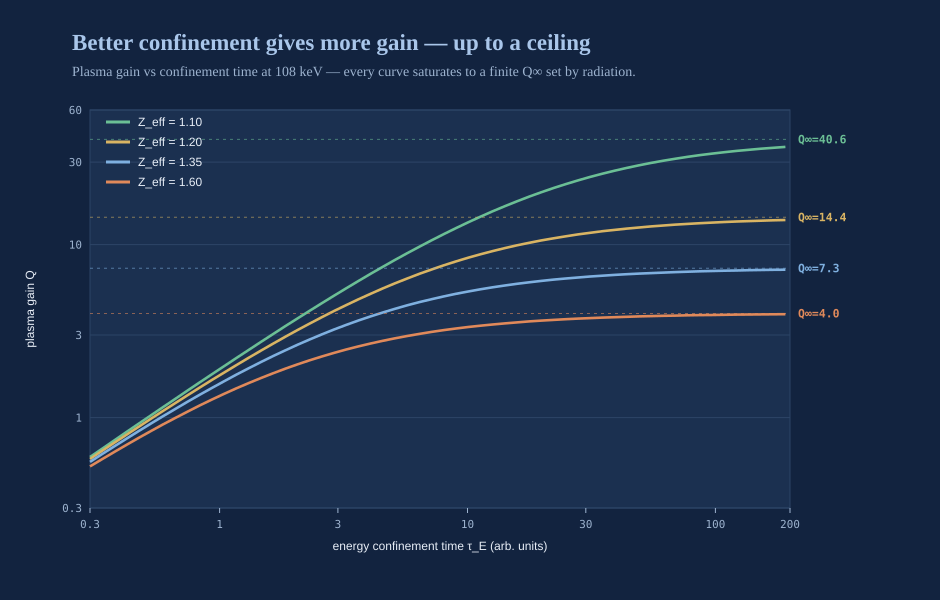

🎧 Prefer to listen? Open the audiobook
A Short History of a Long Dream
The most important fusion reactor in human history cleared the horizon this morning, exactly as it has every morning for four and a half billion years, and it will do it again tomorrow whether or not we deserve it. It has never been switched off. It has never been repaired. It powers, directly or at one remove, essentially every living thing that has ever drawn breath on this planet. The sun is a sphere of hydrogen so colossal that gravity accomplishes what no laboratory on Earth can: it crushes the fuel in the core to densities and temperatures at which hydrogen nuclei — particles that despise one another, that spend their existence flinging themselves apart — are pressed so close, so often, that they surrender and fuse. And when they do, a whisper of mass vanishes from the universe and a torrent of energy takes its place, energy that then claws its way outward for a hundred thousand years to reach the surface and crosses ninety-three million miles of hard vacuum to land, eight minutes later, as the warmth on your face. Understand this and you understand the audacity of everything that follows: fusion is not exotic, not a physicist's fantasy, not some fragile trick at the edge of the possible. Fusion is the ordinary business of the cosmos. Every star scattered across the night sky is doing it right now. The entire history I am about to tell you is the history of a single species — one small, clever, stubborn species on one damp rock — resolving to build a star of its own, a captive star it could hold in its hands and put to work, and then telling itself, and everyone who would listen, for seventy years, that it was very nearly done.
The first reactor, and the equation under it
For all but a sliver of human history, no one knew what the sun was. It was a fire, a chariot, a god, a burning coal wheeled across the sky — and the hard-headed physicists of the nineteenth century, who had abandoned the gods and kept the coal, found themselves staring at a genuine crisis. No chemical fire could burn as long as the sun plainly had. Coal would gutter out in a few thousand years. Even gravitational contraction, the cleverest mechanism anyone could propose, gave the sun a lifespan far too short to square with the age the rocks and the fossils insisted upon. The books did not balance. Something enormous was missing from physics itself — and what was missing was simply that the answer had not yet been discovered.
The answer arrived in two revelations early in the twentieth century, and each one rearranged the world. The first was the recognition that mass and energy are not two things but one, the same currency exchangeable at a ferocious rate of exchange — that a pinch of matter, annihilated, unlocks an amount of energy that beggars intuition. The second was the patient, decades-long working-out of what actually transpires in the furnace of a stellar core: light nuclei fusing into heavier ones, and the heavier product weighing a hair less than the ingredients that made it. That vanished sliver of mass is the starlight. When four hydrogen nuclei become one helium nucleus, roughly seven-tenths of one percent of the mass is converted outright into energy. Seven-tenths of one percent. It sounds like a rounding error. It is the reason the sky is not black and the Earth is not a frozen cinder drifting in the dark.
Grasp that, and you grasp the size of the prize. Chemical burning — the coal, the oil, the gas that built the modern world — merely jostles the outermost electrons of atoms and releases the faint energy stored in the bonds between them. Fusion reaches past the electrons entirely and into the nucleus, where the forces binding matter together are millions of times stronger. Kilogram for kilogram, fusing hydrogen liberates on the order of ten million times more energy than burning coal. A thimble of the right fuel holds the energy of tons of anything you can set alight. From the instant the physics was understood, the temptation became irresistible, almost a moral summons: if the sun runs on nothing but physics, and we have the physics, then in principle the fire of the stars is ours to light.
The trouble hides in that phrase — nothing but physics. The sun succeeds because it is unimaginably vast and unimaginably patient. Its core is denser than anything we can fabricate and confined by the sheer crushing weight of a third of a million Earth-masses of hydrogen bearing down from above. And here is the surprise that humbles every newcomer: by the standards of what a power plant needs, the sun is astonishingly feeble. The power density in the solar core is roughly that of a warm compost heap. The sun is not a blowtorch; it is a mountain of embers, making up in sheer titanic volume what it utterly lacks in intensity. We have neither the volume nor the patience nor the third of a million Earths. To perform on a workbench what a star performs across a million kilometers, we cannot copy the sun's recipe — we have to out-do it. We must run far hotter than the core of a star, so that each collision counts for vastly more, and we must find some way to cradle a substance hotter than the heart of the sun without a vessel to hold it, because no material yet forged or ever to be forged can touch such a thing and live.
The mid-century dream
The middle of the twentieth century is when the dream molted from astrophysics into raw engineering ambition. Humanity had, by then, demonstrated fusion in the most terrible manner conceivable — in the hydrogen bomb, where a fission blast serves as the match that ignites a fusion fuel for a few blinding microseconds. That obscene experiment settled one thing beyond dispute: the energy was real, and it was vast beyond reckoning. The question that then seized a whole generation of physicists was whether the same reaction could be domesticated — not detonated all at once, but held, leashed, throttled, and drawn off gently as heat to boil water and spin a turbine, the same humble way we have made electricity since the age of steam.
The optimism of those first years was absolute, and, from where we stand now, almost heartbreakingly innocent. The reasoning ran like this. We understand the reaction. We can calculate the temperature it demands. Confinement is merely an engineering problem, and engineering problems fall, in the end, to determined people armed with budgets. Several nations, flush with the scientific triumph of the war, convinced themselves that practical fusion power was a matter of a few years — a decade, perhaps two at the outside. The word that echoes through the documents of that era, again and again, is soon.
They had misjudged exactly one thing. Not the reaction. The plasma.
To fuse, a gas must be heated until its atoms are torn apart into a churning broth of bare nuclei and liberated electrons: a plasma, the fourth state of matter, and — this is the part that ought to astonish you — the state that more than ninety-nine percent of the visible universe is actually in. Solids, liquids, gases: those are the exotic rarities, the cold curiosities that cling to planets. The universe at large is plasma. But a plasma at fusion temperatures — well over a hundred million degrees, many times hotter than the core of the sun — is no docile fluid you can decant into a bottle. It is a seething, self-tangling, electrically alive medium that conjures its own magnetic fields, breeds instabilities faster than the finest instruments can clock them, and hunts down, with what genuinely feels like malice, every flaw in whatever you build to cage it. The earliest machines held their plasmas for millionths of a second before the whole writhing creature squirmed sideways, kissed the wall, and died. Confinement was not "merely" engineering. It was an entire new branch of physics, and it was savagely, gloriously hard.
The secret decade, and the turn to daylight
There is a chapter of this story that most popular accounts skip, and it deserves its page, because it explains a bad habit the field never entirely broke.
For roughly the first decade of serious effort, controlled fusion was pursued in secret — in several countries at once, behind the very same walls that guarded the making of weapons. The logic felt airtight at the time: the same physics that might one day boil water was, in its violent incarnation, a matter of national survival, and no nation wished to hand a rival a shortcut. So the earliest machines — the pinches, above all, in which a fierce electric current is driven through a column of gas until the gas's own magnetic field crushes it inward — were built and studied under classification, their results whispered rather than published.
The pinch seduced everyone because it is very nearly self-assembling. Drive a large enough current through a plasma and the plasma squeezes itself; confinement appears to come for free, a gift from nature. In the mid-1950s more than one laboratory believed it was seeing neutrons stream from a pinch, and briefly, thrillingly, believed those neutrons were the fingerprint of real fusion. They were not. The neutrons were the offspring of instabilities — the pinched column, it emerged, is violently unstable, kinking and necking like a fire hose thrashing loose on the ground, and that thrashing flung a few particles hard enough to knock out neutrons that had nothing whatsoever to do with a thermal burn. It was the field's first hard lesson in a discipline it would be forced to relearn for decades: a plasma will cheerfully hand you a signal that looks like triumph and means failure, and only a ruthless, unforgiving accounting of where every single particle and every single joule went can tell the imposter from the real thing.
The secrecy ended, and its ending changed everything. By the late 1950s the leading programs concluded, more or less in unison, that the problem was far harder than any of them could crack in isolation, and that the silence was protecting nothing of weapons value anyway. Controlled fusion was declassified and thrown open to the world. Laboratories that had been hiding their disappointments from one another discovered, almost comically, that they had been failing in precisely the same ways for precisely the same reasons — and the pooling of that shared failure was the first genuine acceleration the field had ever known. It is a pattern I have taken to heart and wired deliberately into our own program: our design is published open-access, meant to be re-run and attacked and stress-tested by anyone who cares to try, precisely because the history could not be clearer — fusion moves fastest in daylight, and fools itself fastest in the dark.
The three numbers, and the criterion that governs them
Before the story goes any further, let me recall the single piece of physics that governs everything to come — you met this bar earlier in the book, but the history does not cohere without it held in mind, and once you hold it again the entire hundred-year saga snaps into one clean shape, the way a scatter of iron filings snaps into a pattern the moment you slide a magnet beneath the paper.
You will remember the bargain: fusion is struck with three terms at once. To extract more energy than you pour in, you must hold a plasma that is hot enough, dense enough, and hold it long enough — all three, together, or not at all. Miss on any one and the whole bargain collapses into loss. In the 1950s this was made precise in what we now call the Lawson criterion: a threshold on the combination of density and confinement time required for a fusion plasma to sustain itself. Modern practice folds in the third term and speaks of the triple product — density, times temperature, times the energy confinement time:
$$ n \, T \, \tau_E \;\gtrsim\; \text{a fixed threshold} $$
Read it in plain words, because plain words are what it deserves. n is how tightly you pack the fuel. T is how hot you run it. τ_E is how long the plasma clings to its own heat before that heat bleeds away into the cold. Multiply the three together, and if the product clears a line set by the fuel you have chosen, the reaction begins to pay for itself. Fall short of the line, and you are shoveling in more than you ever get back. That is all fusion energy has ever been, stripped to the bone: a decades-long, generations-long campaign to drive one number — the product of three quarreling quantities — up and over a single fixed line.
This is why the progress was real and yet agonizing beyond words. You could triple the temperature and watch the confinement crumble and end up worse off than you started. You could win on confinement and forfeit density. The three terms are at war with one another; a plasma is a bad-tempered animal that grants you one thing only by snatching away another. The history of fusion machines is, at bottom, the history of geometries and tricks and gambits invented to win all three terms at once — and every era of the field is really an era defined by how, in its moment, it chose to hold the star.
Fusion was never one hard problem. It was three hard problems that refuse to be solved separately, and a plasma that punishes you for trying.
The age of the magnetic bottle
The first and longest of the great eras belongs to magnetic confinement, and its founding insight is one of the most beautiful ideas in all of applied physics. A plasma is made of charged particles, and charged particles are compelled to spiral along magnetic field lines rather than cross them. So while you cannot hold a plasma in a box of matter — no matter survives the touch — you might hold it in a box built of pure magnetism: a cage with no walls and no floor, suspending a substance hotter than the sun in empty vacuum, touching nothing at all. Read that sentence again. We proposed to build a bottle out of force itself.
The earliest magnetic bottles were straight — a tube of magnetic field, pinched hard at each end to reflect particles back toward the middle, a design called a mirror. The idea was clean and the machines were relatively simple, but the ends leaked. Particles traveling nearly straight along the axis slipped out past the magnetic plugs, and the plasma drained away like water from a hose crimped but not sealed. For decades the straight-bottle approach was filed under the road not taken — the promising geometry that could never quite plug its own ends. (I will say it plainly here, because this entire book is built upon it: that verdict was premature. The straight bottle, rebuilt with modern fields and a cunning tandem arrangement, is exactly the shape our burner takes. But I am getting ahead of the history, and the history has earned its telling.)
The obvious cure for a leaking tube is to bend it into a ring, so that there are no ends left to leak from. That gives you the toroidal machines — the doughnuts — and among them one design rose to dominate the entire field for half a century: a doughnut-shaped chamber that marries an externally applied magnetic field to a strong electric current driven through the plasma itself, the two together twisting the field lines into a tight helix that holds the plasma far better than either could alone. This architecture worked. It worked so well that for fifty years it simply was fusion — in the public mind, and in nearly all of the budgets. Machine after machine grew larger, hotter, more exquisitely instrumented; the triple product climbed, decade over decade, faster even than the early ascent of computing power. Records fell like dominoes. Plasmas that once flickered for milliseconds endured for seconds, then minutes. The doughnut taught the human race very nearly everything it knows about how to confine a star.
There was a parallel toroidal idea worth honoring, because it embodies a lesson the field keeps relearning. Instead of driving a current through the plasma, you could twist the magnetic field into its helix using only cunningly shaped external coils. This traded a simpler, calmer plasma for fiendishly complicated magnets — coils bent into shapes that look like frozen turbulence, like a wave caught mid-break and cast in metal — and for a long while it lagged badly, because we could neither compute nor manufacture such shapes well enough to make them pay. Modern computation has resurrected it. It is a standing reminder that in fusion, a dead end is very often just an approach patiently waiting for a tool that has not yet been invented.
The doughnut decades, and the number that kept climbing
I want to slow down on the middle of the story, because it is the stretch most often waved away as "and then, for fifty years, not much happened." Not much happened the way not much happens to a glacier. Measured against a wristwatch, nothing at all. Measured against a geologist's calendar, the entire landscape was on the move, grinding valleys out of mountains.
The turning point came at the close of the 1960s, and it is one of the most quietly dramatic episodes in the history of science. For years the leading doughnut design — the current-carrying torus — had reported results that its rivals abroad frankly refused to believe: temperatures far higher, confinement far longer, than any competing geometry could touch. The claims were so extraordinary that a team from another country was invited to travel in, bring its own instruments, and measure the plasma directly, using a then-new laser diagnostic capable of reading a plasma's temperature without so much as disturbing it. The visitors set up their lasers. They took their measurements. And the measurements confirmed the claims. Within a few years, laboratories that had been chasing half a dozen rival magnetic geometries abandoned nearly all of them and rebuilt, en masse, around the doughnut. It is the single clearest case in the field's history of one well-measured result reorganizing an entire scientific discipline overnight — and, not incidentally, one more argument for open, independently checkable measurement, which is the only hard currency this whole enterprise has ever run on.
What followed was three decades of building bigger. Each new machine was larger, carried more current, held more plasma, and was watched by more and finer instruments than the last. And the payoff of all that steel and ambition can be captured in one figure of merit — the triple product I described above, density times temperature times confinement time, the single number that tells you how close a plasma stands to paying for itself.
Here is a fact that ought to be as famous as anything in twentieth-century engineering, and somehow is not. From the mid-1970s onward, the fusion triple product doubled roughly every one and a half to two years — a rate of improvement that, over the same span, closely shadowed the doubling of transistors on a chip that made the computer industry legendary and remade civilization. Fusion had its own exponential, its own quiet Moore's law, running the whole time in laboratories the public had stopped watching. Across the doughnut decades the triple product climbed by more than a factor of a thousand: from plasmas that were mere curiosities to plasmas within genuine striking distance of the break-even line. And the reason almost no one outside the field noticed is a subtle and cruel property of exponentials — an exponential starting from far away spends an achingly long time looking like nothing at all. Doubling from one-thousandth of the goal to one-hundredth is a tenfold leap in real physics that still leaves you, to a casual glance, parked at "basically zero." The curve was steep the entire time. It simply started very, very low.

It is worth writing the underlying bargain as an equation, because an equation makes the whole seventy-year struggle suddenly legible. Strip a fusion plasma down to its essentials, and its energy books read like this:
$$ P_{\text{fusion}} + P_{\text{heat}} \;=\; P_{\text{loss}} $$
The fusion reactions deposit some of their power back into the plasma; you add external heating from outside; and the plasma leaks energy — by radiation, by particles and heat escaping the cage — at some relentless rate. The entire game is to arrange matters so that the self-heating from the fusion itself grows large enough that you can throttle back the external heating and still hold the temperature, so that the fire, at last, begins to feed itself. The ratio of what the fusion makes to what you must supply is the number the field lives and dies by:
$$ Q \;=\; \frac{P_{\text{fusion}}}{P_{\text{heat}}} $$
When Q reaches one, the reaction produces exactly as much power as you are pumping in to sustain it — scientific break-even, the point where the star begins to carry its own weight. When Q runs to infinity, the plasma heats itself entirely and needs no external drive at all — ignition, a fire that has forgotten it ever had a match. Every milestone in this book, and every milestone in the seventy years behind it, is at heart a statement about Q, and the triple product is simply what you must achieve to move it. The doughnut decades were the long, unglamorous, heroic labor of dragging Q up from a ten-thousandth toward one. That labor succeeded. What it did not do — could not do, by itself — was make the resulting machine small, or cheap, or repeatable, and that omission is precisely the seam the modern era has learned to pry open.
The age of the imploding pellet
While one community chased confinement with magnets, a second placed the opposite bet entirely — a bet so audacious it inverts the whole problem. Do not bother holding the plasma for long at all. Hold it for essentially no time whatsoever — but at a density so staggering, so far beyond ordinary experience, that the reaction completes before the fuel can so much as begin to fly apart. Look again at the triple product. If you cannot win on confinement time τ_E, then win so overwhelmingly, so violently, on density n that you clear the threshold anyway. This is inertial confinement, and its name is exact: the only thing holding the fuel together is its own inertia, the plain and ancient fact that matter takes a moment to move even when nothing at all restrains it.
The method is violence applied with the precision of a Swiss watch. Take a tiny capsule of fusion fuel, a sphere smaller than a peppercorn. Strike it from every side at once with the most concentrated energy our species can focus — the converging beams of an enormous array of lasers, delivered in a single pulse lasting billionths of a second. The capsule's surface flashes to vapor and blows off, and by simple reaction the rest of it implodes inward, compressing the fuel at the center to many times the density of solid lead and heating it until, for one instant, a spark ignites and a burn wave races outward through the compressed fuel before the whole thing tears itself apart. Each shot is a complete, self-contained star with the lifetime of a single flash of lightning. We do not tame the star in this approach. We are born, live, and die inside it, over and over, a few times a second.
Inertial confinement demands a wholly different species of perfection from its magnetic cousin. The implosion must be almost inhumanly symmetric — a lopsided squeeze squirts the fuel out sideways instead of crushing it to the center — and that places staggering demands on the uniformity of the drive, the smoothness of the capsule, the choreography of the beams down to the trillionth of a second. For decades it, too, crept toward the line, shot after shot after shot, held back not by any flaw in the concept but by the sheer, punishing difficulty of the dance.
The zoo, and the roads not fully taken
If the doughnut and the imploding pellet were the two great highways, the rest of the field was a crowded, inventive, half-wild back-country of approaches, most of which never reached the line — but nearly all of which taught the field something it kept and carried forward.
There was the family that tried to have it both ways at once — compress a magnetized plasma quickly, so that you win on density like an implosion while a magnetic field slows the losses like a bottle, splitting the difference between the two great philosophies. There were configurations in which the plasma is coaxed into generating and trapping its own magnetic field, dispensing with most of the external coils and the fortune they cost. There were revived pinches, run now with modern power supplies and a modern understanding of the very instabilities that fooled the pioneers, stabilized at last rather than merely endured. There were schemes to enlist heavy particles as catalysts, sidestepping the temperature problem altogether by a genuine quantum trick — elegant, real, and, in the end, unable to pay back the energy spent conjuring the catalyst. Each of these was, in its moment, somebody's confident answer to the whole puzzle. Most are still alive, in some form, somewhere — because in fusion an approach rarely truly dies. It goes dormant, curls up, and waits for a magnet, a material, or a computer that has not yet been invented.
And there was the straight bottle — the mirror — which the standard history files, briskly, under tried, leaked, abandoned. I have already promised to come back to it, and here is the promise kept in a single paragraph, because it is the hinge on which everything that follows turns. The mirror's fatal flaw was that particles moving nearly along its axis slipped out the ends. But the ends can be plugged far, far better than the early machines ever managed — with a tandem arrangement that stations a small, ferociously strong magnetic plug at each end to raise an electrostatic dam, a wall of voltage, that turns escaping ions back toward the center. What defeated that idea the first time was not the concept but the magnets: no one could then build a field strong enough, packed into a plug small enough, to make the dam hold. And that is a materials problem, not a law of nature — and materials problems, unlike laws of nature, have expiration dates. Hold that thought close. It is the buried seed of our burner, and it has been waiting seventy years for its season.
Which fuel, and why the choice governs the machine
There is one more axis the standard history tends to underplay, and it is the one that most powerfully shapes the machine you end up building: which nuclei you choose to fuse in the first place. The reaction is not a single thing. It is a menu, and every item on the menu charges a different, unforgiving price.
The easiest reaction to light — the one nearly every machine in the story above was designed around — fuses the two heavy isotopes of hydrogen, deuterium and tritium. It ignites at the lowest temperature and releases the most energy per event, which is exactly why it is the beginner's choice and the near-term choice, the reaction you reach for first. But it charges two brutal fees at the door. First, four-fifths of its energy pours out as fast neutrons — uncharged particles that fly straight through magnetic fields as though the cage were not there, slam into the machine's structure, make it radioactive, and can only be captured as plain heat to boil water in the old, tax-heavy thermodynamic way. Second, one of its two fuels, tritium, is radioactive, decays away in about a dozen years, and essentially does not exist in nature; there are only a few tens of kilograms of it on the entire planet, most of it a byproduct of fission reactors, and a fusion economy the size of the one this book dares to imagine would burn through that entire world stock in a matter of days.
That second fact is not a footnote. It is a fork in the road that most optimistic accounts sail straight past with their eyes closed. A deuterium–tritium machine that cannot make its own tritium is a machine with no fuel — a magnificent engine bolted to an empty tank. The only escape is for the machine to breed its own — to wrap the reaction in a blanket of lithium, let the escaping neutrons transmute that lithium into fresh tritium, and harvest more than you burn. The number that decides whether this works, whether the whole vision stands or starves, is the tritium breeding ratio, the count of new tritium atoms bred for every one consumed. It must exceed one, with margin to spare, or the enterprise slowly, quietly starves to death no matter how brilliantly the plasma burns.
$$ \text{TBR} \;=\; \frac{\text{tritium atoms bred}}{\text{tritium atoms burned}} \;>\; 1 $$
Further along the menu sit the reactions the field has always dreamed of and rarely reached: fusing deuterium with helium-3, or lighter nuclei still, in reactions that throw off their energy mostly as charged particles rather than neutrons. And charged particles can be steered by magnetic fields — which means their energy can, in principle, be converted to electricity directly, without the enormous thermodynamic tax of boiling water and spinning a turbine, and while sparing the machine most of the neutron damage and the radioactivity besides. It is the cleaner, higher road. The catch is temperature: these clean reactions ignite only far hotter than deuterium–tritium, which for seventy years placed them cruelly out of reach, and one of their finest fuels, helium-3, is rarer on Earth even than tritium.
Read the menu carefully and a strategy writes itself — a strategy the field's stubborn single-machine tradition never quite permitted itself to see. What if you refused to force one machine to do both jobs at once? What if one machine were built to run the easy, neutron-rich, tritium-hungry reaction on purpose — not to make electricity at all, but to breed tritium and helium-3 and to put those hard neutrons to productive work — and a second, later machine were built around the clean, charged-particle reaction, fed by the very fuel the first one makes? That division of labor is the doctrine this book is built upon, and I lay it out in full in the chapters ahead. I raise it here only to prove that it is not a marketing conceit dreamed up in a boardroom. It falls straight out of the physics of the fuel menu the instant you stop insisting that a single design must satisfy every constraint in the universe at once.
The decades of "thirty years away"
Now I have to tell you the part of the story that this book exists, in a sense, to atone for.
Somewhere in those long middle decades, fusion earned a reputation, and it earned it honestly. Ask anyone who paid casual attention when practical fusion power would finally arrive, and you would hear, delivered with a knowing smile, the exact same answer their parents had heard, and their grandparents before them: thirty years away — and always will be. It became a joke, then a proverb, then a genuine liability that hung around the field's neck like a stone. Over and over, across nations and generations, fusion had announced that the breakthrough was near. Near in the fifties. Near in the seventies. Near in the nineties. And each time the plasma proved subtler than the promise, the timeline slid forward by roughly as much time as had elapsed, and the horizon stayed forever thirty years out — receding as you approached it, like the end of a rainbow that walks backward as fast as you walk toward it.
It is worth understanding why the horizon slid so reliably, because the reasons are structural, not merely psychological, and a program that does not understand them is doomed to repeat them. Three forces all pushed in the same direction.
The first was the exponential itself. A number improving by a steady factor every couple of years feels, from the inside, like relentless, thrilling progress — and it genuinely is. But an exponential climbing toward a fixed line spends the overwhelming majority of its life far below that line, and the human eye reads "steep and rising" as "nearly finished" long before the arithmetic will agree. Worse still, the final stretch to a real power plant is not simply more of the same climb; the return on each further gain flattens as you close in, and the engineering demands — steady-state operation, materials that survive years of neutron bombardment, tritium that breeds faster than it burns, a heat-exhaust system that does not simply melt — all stack up precisely in the regime the physics experiments had been designed to skip. The experiments were climbing one hill with great success. The power plant sits on the next hill over, and the valley between them was routinely, conveniently, left off the map.
The second force was the very way big science is funded. A large fusion machine takes a decade or more to design and build and another decade to wring out. Programs on that scale live or die on the budgets of governments, and a budget is far easier to defend with a date attached — a promised demonstration, a milestone a minister can name in a speech — than with the honest, unglamorous statement that a research program studies a hard problem until the problem yields, which may be never on any particular schedule. So the incentives quietly, relentlessly rewarded confident dates. A research horizon, which by its very nature recedes, kept being spoken aloud as a delivery date, which by its very nature must not. And when the delivery date passed and the research horizon had merely advanced, the public dutifully booked the difference as failure.
The third force was that the biggest machines were, of necessity, one of a kind. When your plan hinges on a single enormous device that will take twenty years to build, every delay in that one device is a delay in the entire field's timeline, and there is no second unit already coming down the line to absorb the lesson and carry on. The strategy of the great decades was to make one giant, heroic leap. The trouble with one giant leap is elementary and unforgiving: if you land short, you have nowhere to stand while you gather yourself for the next.
I want to be careful and fair here, because the cliché is cruel to some very serious and very brilliant people. The science was not stagnant during those decades — quite the opposite; it was one of the great sustained intellectual achievements of the age. The triple product rose by more than a factor of a thousand. We learned to heat plasmas, to diagnose them with exquisite instruments, to predict a growing catalog of the ways they misbehave. Real, cumulative, honest progress happened every single year without exception. The failure was not a failure of science. It was a failure of promising. The field, hungry for the budgets that big science requires to breathe, again and again let its hopes be spoken as forecasts, and let forty years of hard-won physics be packaged and sold as "almost done." And when the machines then behaved exactly like machines — slowly, expensively, and later than hoped — the gap between the promise and the delivery was booked, in the public ledger, as failure. It was not failure. It was overpromising, which is a different sin entirely, and in the long run a far more expensive one, because it spends a currency you cannot easily earn back: belief.
The physics of fusion advanced by a factor of a thousand while its reputation went to ruin. The plasma kept its promises. We did not keep ours.
The 2020s: the line is crossed
And then, in this very decade, several things that had been "almost" for two full generations quietly, undramatically became done.
A national laser facility, after years of patient refinement of the implosion, reported that it had achieved ignition — a fusion burn that produced more energy than the laser light delivered to the target. It was not a power plant; it was a physics result, a single spark struck inside a building the size of a stadium, and it says nothing by itself about cost or repetition rate or the grid. But it retired, forever, a question that had hung over the entire field for seventy years like a shadow: can a human-made fusion burn pay for its own ignition? The answer, at last, on the permanent record, with witnesses and instruments and independent scrutiny, was yes. We lit a star, and the star paid us back.
On the magnetic side, the largest international tokamak project — the biggest scientific machine ever assembled by human hands, built by a consortium spanning much of the industrialized world — moved through its long construction toward the burning-plasma experiment it was designed for: the demonstration of a magnetically confined plasma producing many times more fusion power than is used to heat it. Other magnetic machines, larger and hotter than any of their ancestors, drove sustained high-performance plasmas to durations that would have seemed pure fantasy a single generation before.
Take the two together and the meaning is unmistakable, and I will state it in the plainest declarative sentence I can build. Scientific break-even — more fusion energy out than heating energy in — has been approached and, in at least one confinement scheme, passed. The central scientific question of the twentieth century's fusion program has been answered in the affirmative. The star can be lit on a workbench and made to pay. That is settled now, and no serious person disputes it.
I choose my words with deliberate restraint, because restraint is the whole argument of this book. Scientific break-even is not the same thing as an engineering power plant that returns energy to the grid after every pump, magnet, laser, and cooling system has taken its cut. Ignition in a single heroic shot is not a plant that fires ten times a second, every second, for thirty unbroken years. The line that has been crossed is a real and historic line, a line human beings spent seventy years and untold billions marching toward. It is simply not the last line. Anyone who tells you the crossing of scientific break-even means grid power is imminent is committing, one more weary time, the exact sin that ruined the field's credibility in the first place. I will not do it. The entire value of saying "the line is crossed" depends on being scrupulously honest about which line.
Why this decade is genuinely different
Here I have to defend a claim that should make any careful reader instantly suspicious, and I want that suspicion — it is the correct response. I have just spent pages describing seventy years of people insisting that fusion was nearly here. Now I am going to tell you that this time is different. You would be right to raise an eyebrow and reach for the salt. So let me not merely assert it — let me show you what has actually changed, and demonstrate that the change is in the inputs, not merely in the mood.
First, the magnets. For its entire history, magnetic fusion was throttled by one brutal ceiling: how strong a magnetic field its coils could produce. The strength of the bottle sets how tightly you can squeeze the plasma, and the payoff is not gentle — the performance of a magnetic machine climbs roughly with the fourth power of the field strength. Double the field and you win something like sixteenfold. A new class of superconductor that carries enormous current at high magnetic field, in tapes that can actually be manufactured and wound in the real world, has now arrived and been proven at scale. It lets a modern machine reach fields that would once have demanded something impossibly, ruinously large — which means the same physics can now be won inside a machine a fraction of the old size. And smaller machines are cheaper machines, and cheaper machines can be built more than once, iterated, improved, and improved again, instead of being staked on a single decades-long roll of the dice. This is not an incremental tweak. It moved the entire design space out from under the field's feet.
Second, artificial intelligence. A fusion plasma misbehaves faster than a human — sometimes faster than any conventional controller — can possibly respond. For most of the field's history, that meant a great deal of a machine's real behavior was simply beyond our power to predict or steer in the living moment. That has changed, and I can put hard numbers to it, because this is the part of the story my own team has lived with our own hands: a safety layer we built to override any command that would violate a physical limit caught every one of three thousand deliberately injected violations, with zero escapes. That is one figure among many; the AI chapter gives the full receipts — machine-learned surrogates that run the physics far faster and more accurately than the fast-models they replace, learned systems that catch a disruption's precursors tens of milliseconds ahead where older methods saw it coming only a couple, and the honest misses set down beside the wins. The point for the history is narrower: fusion control is no longer a matter of praying the plasma behaves. It is becoming, at last, a matter of engineering.
I should be equally honest about what AI is not doing, because the same discipline that lets me boast must also make me confess. The much-hyped promise of near-term quantum computing speedups for fusion design is, in plain terms, not real this decade; where quantum ideas genuinely help us today, it is offline, in calibration and in quantum-inspired mathematical methods, not in a quantum computer solving a plasma. Quantum sensing — a new generation of diagnostics — is genuinely close and genuinely useful. I draw these lines sharply and on purpose. A field that has finally learned its lesson names, precisely and without flinching, which of its miracles are real and which are still stories.
Third, the money has changed character. For most of its life fusion was a creature of government science budgets — patient, essential, and structurally comfortable with a horizon that never quite arrives, because a research program is funded to study a problem, not to ship a product by a date. That patient public money has now been joined, in this decade, by private capital that expects a return and therefore expects a schedule. Private money is not automatically wiser than public money, and it brings its own gravitational pull toward hype. But it changes the incentives in one genuinely healthy direction: it rewards building a thing that works over publishing a paper about why a thing might someday work. It puts a clock on the room, and a clock, for a field that spent seventy years pretending it had all the time in the world, is a form of honesty.
Fourth, and most important of all, there are now real customers. For seventy years fusion had no buyer waiting in the wings — only a warm and general faith that clean, limitless power would surely be welcome whenever it finally deigned to arrive. That has changed utterly, and this is the change I would underline three times if the page allowed it. The demand for firm, clean, dispatchable power has detonated — driven by the electrification of very nearly everything, and by an appetite for computation that now devours electricity on a scale no one seriously forecast a decade ago. There are, at last, identifiable people who want to buy firm clean power at scale and are prepared to sign for it before the plant physically exists. A technology with a customer is a fundamentally different creature from a technology with only a dream. The dream got fusion across the scientific finish line. The customer is what will get it onto the grid.
The honest lesson
So here is the history, compressed to its moral, and it is the moral this entire book is built to obey — every chapter, every number, every carefully hedged date.
Humanity's pursuit of fusion is one of the great scientific epics of our species — a hundred-year climb up a single steep hill, the triple product hauled over its threshold by generation after generation of people who mostly did not live to see the summit and climbed anyway. The science delivered. Every honest measure of the plasma got better, year over year, for seventy years, and in this decade the central scientific question was finally answered: yes, a controlled fusion burn can be made to pay for its own ignition. That is real, it is historic, and it is settled beyond argument.
The field's long agony was never a failure of the science. It was a failure of speech. Again and again, hope was spoken as forecast, a research horizon was sold as a delivery date, and a genuine triumph-in-progress was packaged and shipped as a triumph-completed. The bill for that came due as a credibility problem so deep it curdled into a punchline, and the punchline outlived the very people who earned it. The single most valuable thing a fusion effort can possess today is not a hotter plasma or a stronger magnet or a cleverer code. It is the trust that was squandered — and trust, once spent, is bought back only slowly, and only ever with delivery.
That is why the rest of this book will sound, in places, almost perversely conservative, and I want you to understand that the caution is not timidity but strategy. When I tell you the honest horizon is measured in decades, not years; when I insist that our fuel-making machine is net-negative on electricity and say so on every single page it appears; when I refuse to promise a hard early date for grid power even though our internal plan reaches further and sooner; when I draw a bright, unmissable line between the physics being solved and the hardware being built — I am not being modest. I am being deliberate. I watched the smartest field in the world talk itself out of the world's belief, one optimistic press release at a time, over the course of my whole life and my parents' lives before it. I do not intend to repeat the one mistake that fusion has made reliably, on schedule, for seventy years. The sun has kept its promises for four and a half billion years without once breaking its word. It is long past time that the people trying to build one of their own learned, finally, to keep theirs.